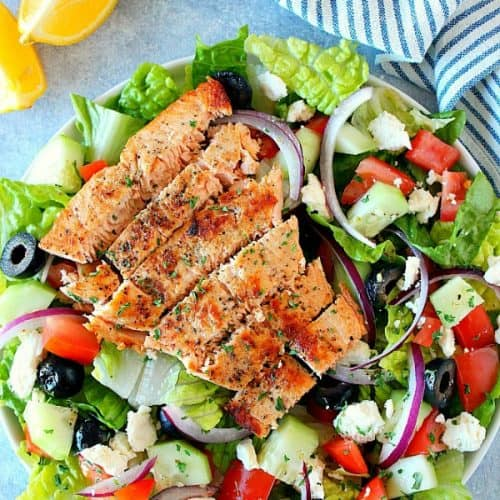

Salmon salad with sesame dressing
Get three of your 5-a-day, plus healthy omega-3 fatty acids,
vitamin C, folate and fibre in this quick, easy and low-calorie salad.
Back to the other recepies

Ingredients for the salad:
- 250g new potatoes, sliced
- 160g French beans, trimmed
- 2 wild salmon fillets
- 80g salad leaves
- 4 small clementines, 3 sliced, 1 juiced
- handful of basil, chopped
- handful of coriander, chopped
Ingredients for the dressing:
- 2 tsp sesame oil
- 2 tsp tamari
- ½ lemon, juiced
- 1 red chilli, deseeded and chopped
- 2 tbsp finely chopped onion (¼ small onion)
--------------------
--------------------
--------------------
Steps:
- Steam the potatoes and beans in a steamer basket set over
a pan of boiling water for 8 mins. Arrange the salmon fillets
on top and steam for a further 6-8 mins, or until the salmon
flakes easily when tested with a fork.
- Meanwhile, mix the dressing ingredients together
along with the clementine juice. If eating straightaway,
divide the salad leaves between two plates and top with
the warm potatoes and beans and the clementine slices.
Arrange the salmon fillets on top, scatter over the herbs
and spoon over the dressing. If taking to work, prepare the
potatoes, beans and salmon the night before, then pack into
a rigid airtight container with the salad leaves kept separate.
Put the salad elements together and dress just before eating
to prevent the leaves from wilting.